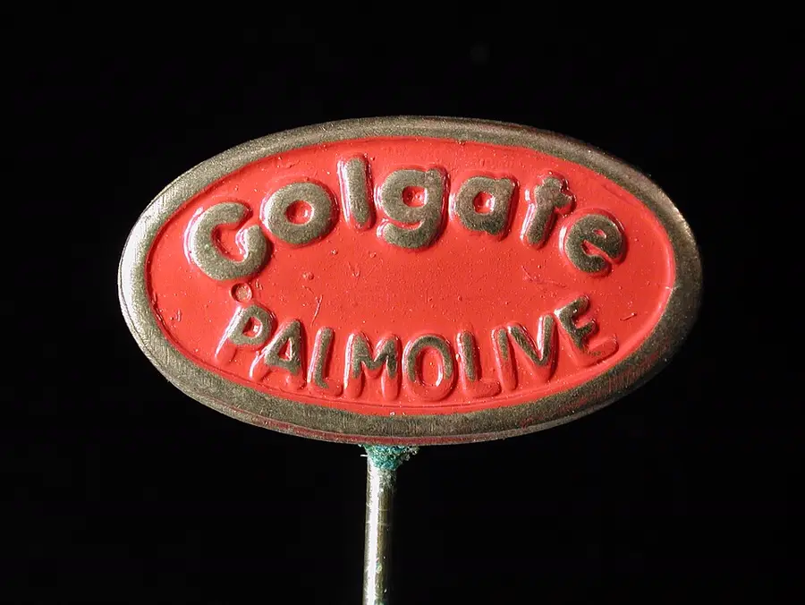

콜게이트-파몰리브 Colgate-Palmolive Company
콜게이트-파몰리브(Colgate-Palmolive Company)는 가정용품, 의료용품, 개인 위생 용품의 생산과 배급에 초점을 둔 미국의 다국적 기업이다.
최종 업데이트

콜게이트-파몰리브는 어떤 브랜드인가
이 회사는 구강 관리, 개인 관리, 홈케어와 애완동물 영양 분야의 제품을 생산하고 배급한다. 주요 브랜드로 콜게이트, 파몰리브, 브라이트를 운영한다.
미국에서는 약 60개의 부동산을 운영하며, 해외에서는 약 280개의 부동산을 운영하고 이 가운데 80개를 70개국 이상에서 소유한다. 주요 해외 시설은 호주, 브라질, 중국, 프랑스, 인도, 이탈리아, 멕시코, 폴란드, 남아프리카, 태국, 베트남 등 여러 국가에 분포한다.
구강·개인·홈케어 연구와 애완동물 영양 연구를 위한 주요 연구 센터도 각각 운영한다.
콜게이트-파몰리브는 어떻게 시작되고 성장했나
이 회사는 1806년 William Colgate가 미국에서 설립했다. 2004년에 시작한 구조 조정 프로그램에 따라 일부 시설의 생산을 폐쇄하거나 단계적으로 중단했다.
구조 조정 과정에서는 미국, 멕시코, 폴란드에 치약 생산을 위한 새로운 공장을 건설했다. 2014년에는 구강·개인·홈케어 부문이 사용하던 뉴저지주 모리스타운 공장을 폐쇄하고 사우스캐롤라이나주 호지스로 사업장을 이전했다.
이러한 생산 시설의 재편과 해외 시설 운영을 통해 여러 국가에 제조와 배급 기반을 구성했다.
콜게이트-파몰리브의 브랜드 아이덴티티는 무엇인가
구강 관리와 개인·홈케어를 중심으로 애완동물 영양까지 포괄하며, 다수 국가의 제조·연구 시설을 함께 운영한다는 점이 구분점이다.
콜게이트-파몰리브의 대표 제품과 서비스는 무엇인가
주요 브랜드는 구강 관리 중심의 콜게이트와 개인·홈케어 분야의 파몰리브, 브라이트로 구성한다. 사업 부문은 구강 관리, 개인 관리, 홈케어 제품뿐 아니라 애완동물 영양 제품도 포함한다.
구강·개인·홈케어 제품의 주요 연구 센터는 뉴저지주 피스카타웨이에서 운영하며, 애완동물 영양 제품의 주요 연구 센터는 캔자스주 토피카에서 운영한다. 뉴저지주 벌링턴의 주요 제조 공장에서는 전 세계 회사 시설에서 사용하는 향료와 향유를 모두 생산한다.
콜게이트-파몰리브는 지금 어떤 상태인가
미국에서는 약 60개의 부동산을 운영하고 그중 14개를 소유하며, 해외에서는 약 280개의 부동산을 운영하고 그중 80개를 70개국 이상에서 소유한다. 애완동물 영양 부문은 켄터키주 볼링 그린을 비롯한 여러 지역에 주요 시설을 운영한다.
구강·개인·홈케어 부문의 주요 시설은 여러 국가에 분포하며, 생산 시설의 폐쇄와 이전 및 신규 공장 건설을 포함한 구조 조정을 진행한다.
콜게이트-파몰리브 로고는 어떻게 변해왔나
시기는 위키데이터 로고 기간 또는 위키미디어 커먼즈 파일 정보 기준입니다. 이미지를 누르면 원본 파일과 라이선스를 볼 수 있습니다.
사진으로 보는 콜게이트-파몰리브의 역사

자주 묻는 질문
콜게이트-파몰리브는 어느 나라 브랜드인가요?
콜게이트-파몰리브는 미국의 뷰티·퍼스널케어 브랜드입니다.
콜게이트-파몰리브는 언제 설립되었나요?
콜게이트-파몰리브는 1806년 설립되었습니다.
콜게이트-파몰리브의 브랜드 아이덴티티는 무엇인가요?
구강 관리와 개인·홈케어를 중심으로 애완동물 영양까지 포괄하며, 다수 국가의 제조·연구 시설을 함께 운영한다는 점이 구분점이다.
콜게이트-파몰리브의 대표 제품은 무엇인가요?
주요 브랜드는 구강 관리 중심의 콜게이트와 개인·홈케어 분야의 파몰리브, 브라이트로 구성한다.
콜게이트-파몰리브는 어느 기업이 소유하고 있나요?
미국에서는 약 60개의 부동산을 운영하고 그중 14개를 소유하며, 해외에서는 약 280개의 부동산을 운영하고 그중 80개를 70개국 이상에서 소유한다.
콜게이트-파몰리브의 창업자는 누구인가요?
콜게이트-파몰리브의 창업자는 William Colgate입니다(위키데이터 기준).
콜게이트-파몰리브의 본사는 어디에 있나요?
콜게이트-파몰리브의 본사는 뉴욕에 있습니다(위키데이터 기준).
출처와 검증
콜게이트-파몰리브 관련 참고: 공식 웹사이트 · 위키데이터 Q609466 · 한국어 위키백과 · 영어 위키백과. 브랜드명은 한글과 원어를 함께 표기하되 데이터에 없는 표기는 만들지 않습니다. 기원 국가·설립연도는 검수된 정의문에서 확인된 값을 우선하고, 없을 때만 공식 웹사이트 URL이 일치하는 위키데이터 개체의 값을 씁니다. 웹 첫 보관은 인터넷 아카이브가 공식 사이트 첫 화면을 처음 보관한 날로, 사이트 개설일과 다를 수 있습니다. 연 매출은 미국 증권거래위원회(SEC)에 제출된 연차 보고서(10-K)의 XBRL 값이며 달러 금액을 반올림했습니다. 위키데이터 값은 2026-09-12 기준입니다.